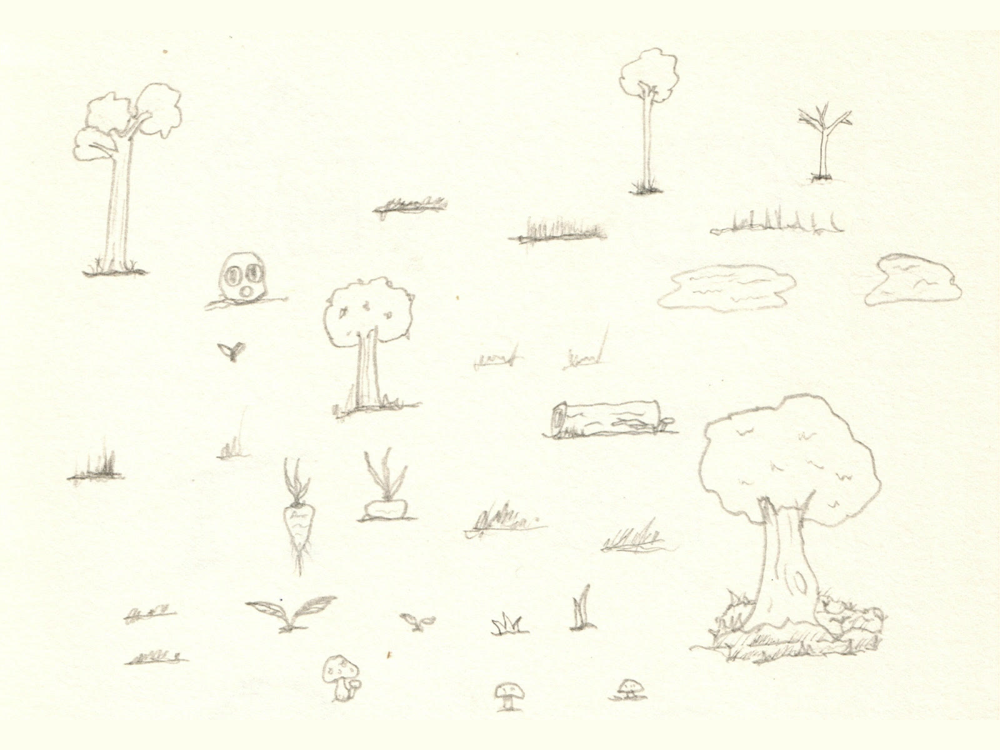
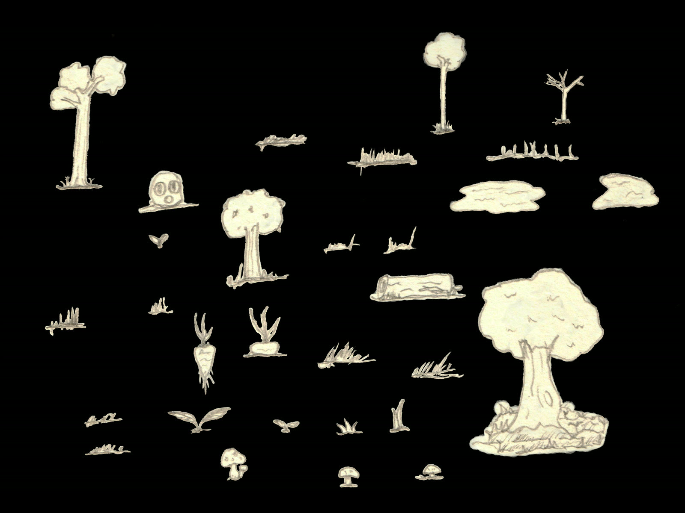
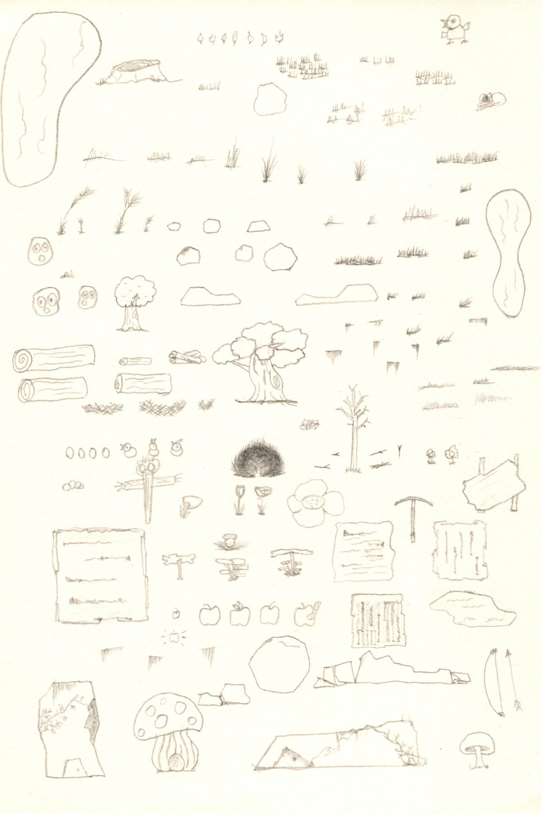
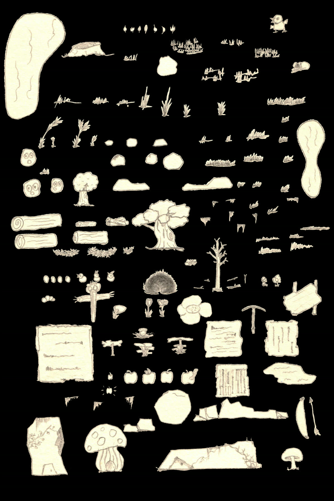

Unity 2D Game
A 2D game made while learning Unity C#. The art and designs were all hand drawn and scanned in to be cleaned up digitally into sprites.
Game design
A world to interact with
The environment was designed with intent to be highly interactable. The heaviness of the log, slowness of a muddy puddle, and little rocks to be pushed around, etc. All these carefully placed elements are what makes a world come alive and feel natural.
Learning method
Planned with Codex
My game development journey originally kicked off from some self-paced online courses. Later, I had agentic AI running in Codex to help plan and schedule the concepts for me to learn. The lessons were then designed and planned around this project itself. Codex would explain one concept at a time and review my coding attempts to check my understanding.
Visual development
From pencil sheet to sprite
My scanned-in physical sketches next to the digitally cropped-out assets. I carefully left some of the edges on the artworks to create a paper cut-out or tear feel when they are used as sprites in the final game.




Continued development
What’s next
I am still actively learning and working on the development of this game. I will finish converting my second set of assets into usable game sprites. Learning new programming or Unity concepts is challenging and rewarding at the same time.